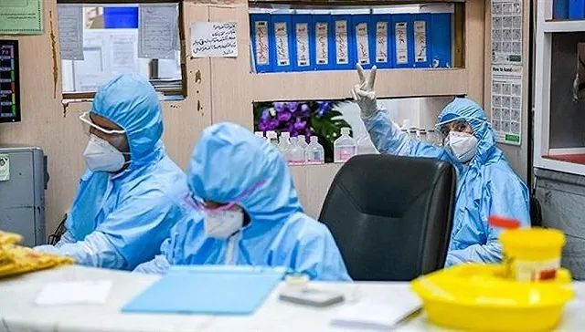

意大利确诊229例死亡7例，韩国检测“新天地”全体信众
原文链接 备份链接 意大利米兰街头。图片来源：半岛电视台 “ 全球新冠肺炎疫情播报，持续更新。 ” （本文持续更新中，点击左下角阅读原文，实时跟踪国际疫情动态。文中段首所示时间为本文更新时间。） 意大利 0800 【意大利新冠肺炎死亡病例 …

图片来源：Press TV
记者：肖恩
“
伊朗新冠肺炎确诊病例数已超过日本，在海外国家中仅次于韩国和意大利。
”
伊朗卫生部3月1日通报称，24小时内，该国新增确诊病例385例，累计978例，其中死亡54例，治愈出院175例。此前一天伊朗累计确诊593例。
这意味着，伊朗确诊病例总数已经超过日本，在境外国家中仅次于韩国和意大利。伊朗大部分确诊病例集中在首都德黑兰、什叶派圣城库姆和拉什特。
伊朗卫生部副部长简巴巴伊（Qasem Janbabaei）在2月29日致信全国医学院院长，要求全国范围内所有公共、私营和慈善医院都停止接受非急诊病人，集中力量收治新冠肺炎患者，否则将面临法律处罚。如有必要，医院应提供24小时服务。此前伊朗在每个省市设立至少一个医院收治新冠肺炎患者。
伊朗巴斯德研究所所长比格拉里（Alireza Biglari）表示，目前全国已有超过22个实验中心配备了检测试剂盒，能够快速对医院搜集的患者样本进行检测，检测能力较此前提高数十倍。
伊朗科学技术战略重心副主任加德利法则表示，伊朗医科大学开始着手研究新型冠状病毒疫苗，新冠病毒检测试剂盒也将在不久的将来实现大规模生产。伊朗公司Ali Qolami 2月29日称，已将试剂盒生产提上日程，预计每天能生产150至200个，每个试剂盒能检测50名患者。
为了遏制新冠病毒传播，伊朗各大银行将缩减工作时间，大中小学均已停课，电影院、音乐厅等公共场所全部关闭。
伊朗军方也加入了这场抗疫战争。据塔斯尼姆通讯社消息，伊朗陆军成立“圣战基地”（jihadi base），以抗击新冠肺炎疫情，并于1日在德黑兰举行了仪式。伊朗陆军的步兵部队已经开始按计划对德黑兰的医院进行消毒。伊朗伊斯兰革命卫队（IRGC）在库尔德斯坦的一名军官则表示，革命卫队能提供七辆特殊车辆帮助进行当地街道的消毒工作。
但快速增加的确诊数字仍引起当地民众恐慌。据阿拉比亚电视台网站报道，伊朗南部阿巴斯港（Bandar Abbas）一家诊所遭遇纵火，原因是当地民众认为有来自库姆的数十名新冠肺炎确诊患者在那里隔离。这一消息在社交媒体上流传，引起当地民众不满。但随后伊朗法尔斯通讯社辟谣了这一消息。
据俄塔社报道，克里姆林宫2月29日声明称，俄总统普京当天与伊朗总统鲁哈尼通电话，哀悼因新冠肺炎死亡的伊朗人，并承诺愿为伊朗遏制疫情提供帮助。
未经授权 禁止转载

原文链接 备份链接 意大利米兰街头。图片来源：半岛电视台 “ 全球新冠肺炎疫情播报，持续更新。 ” （本文持续更新中，点击左下角阅读原文，实时跟踪国际疫情动态。文中段首所示时间为本文更新时间。） 意大利 0800 【意大利新冠肺炎死亡病例 …
原文链接 备份链接 意大利伦巴第大区一所医院。图片来源：CNN “ 全球新冠肺炎疫情播报，持续更新。 ” （本文持续更新中。文中段首所示时间为本文更新时间。） 世卫组织 0800【中国境外日新增确诊病例连续第4日超过中国】 根据世界卫生组 …
原文链接 备份链接 图片来源：Wikimedia Commons 记者：肖恩 “ 有专家认为，检测人数少是美国目前确诊病例不多的原因。 ” 疑似首例新冠肺炎社区传播病例让美国提高了警惕，疾病控制与预防中心（CDC）也为此修改检测标准。但 …
原文链接 备份链接 【财新网】（记者 丁捷 综合）中国国内疫情统计数据呈现向好的趋势，根据各地消息，全国已有六省下调重大突发公共卫生事件应急响应级别。尽管部分重症、危重症病例转为死亡病例，但总量在减少。另一方面，新冠肺炎疫情拉响全球警报， …
原文链接 备份链接 据路透社报道，2月22日，伊朗卫生部发言人贾汉普尔表示，伊朗新检测出10例新冠肺炎病例，其中1例已经死亡，伊朗确诊病例总数达到28例。 “伊朗所有城市可能都出现冠状病毒” 贾汉普尔表示，新增的10个被确诊病例中，8个 …